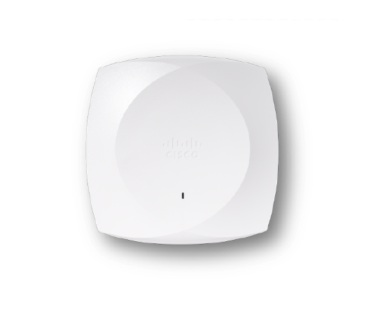
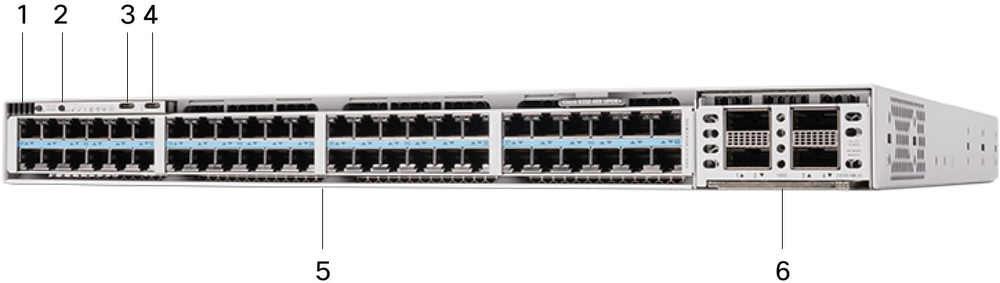
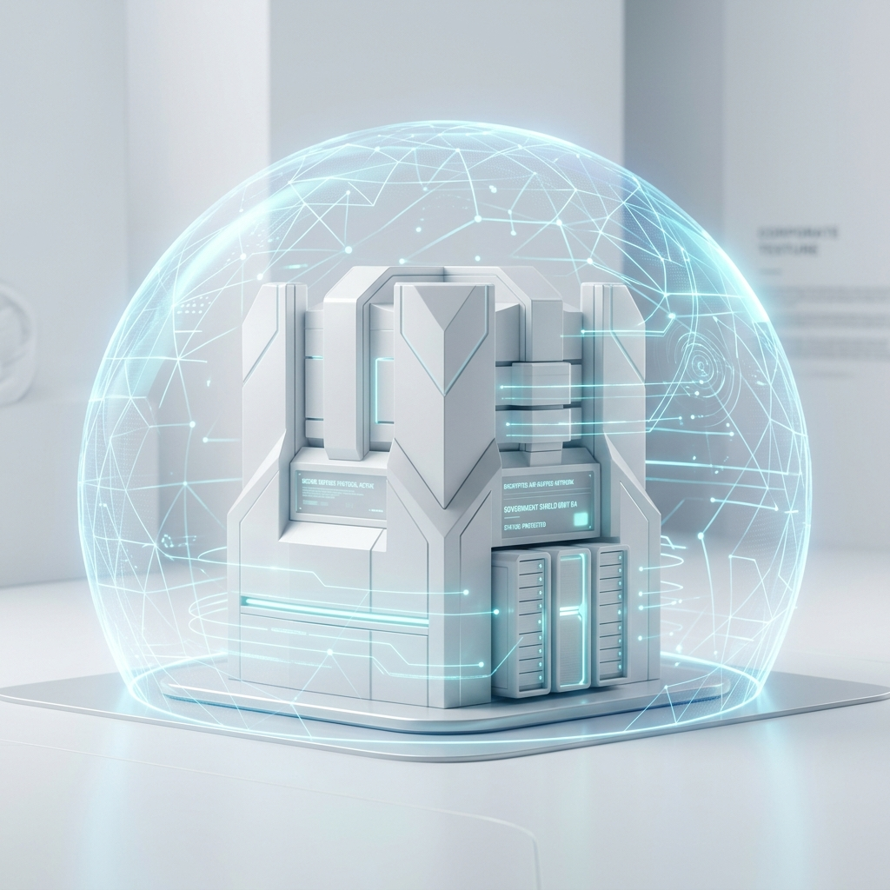

The Edge Intelligence Grid.
Divide the payload. Aid the edge.
We transform Cisco Catalyst 9300 Series Switches and CW917X Access Points into a sovereign, decentralized AI execution farm via native Docker containers. Leveraging asymmetric pipeline parallelism to execute high-density AI workloads with zero dedicated GPUs.
Absolute Data Sovereignty.
Consider a financial institution processing highly sensitive PII. Cloud-based LLMs leak context via external APIs. Divaid keeps the prompt entirely localized. The inference swarm is physically sandboxed within the walls of the branch.
Cisco IOx & Native Docker Execution
Catalyst 9300 series and modern edge APs possess robust ARM64 compute capacity. Cisco IOx allows native Docker containers to run directly on the switch hardware, but restricts memory footprints via strict cgroups. Running colossal AI architectures natively in this sandbox was deemed impossible. Until now.
GGUF Encoding
We subject state-of-the-art dense transformer models to aggressive INT4 quantization. By dropping precision on the weight matrices, the payload is algorithmically compressed, fitting inside the Docker image without perplexity degradation.
The DivGraph™ Algorithm
Our proprietary DivGraph Distribution Algorithm resides in the C9300 Orchestrator container. When a heavy AI task hits the network, DivGraph shatters the underlying neural network layers into mini-tasks. Rather than passing parameter weights, it distributes fractional matrix multiplication tasks across the Docker nodes running on your AP swarm.
C9300 Merge
Once the AP nodes complete their fraction of the calculation, the tensors return to the C9300. The Orchestrator acts as the ultimate verifier, recombining the mini-tasks, decoding the hidden states, and returning the definitive final AI output with mathematical certainty.
The 1,000-Node Compute Matrix.
Scale changes everything. Imagine a corporate campus with 100 Catalyst Switches and 1,000 Access Points. When a colossal Generative AI task hits the network, the C9300 Orchestrator slices the mathematical workload into thousands of shard-groups (represented by colors) and routes them across the mesh.
Zero Wi-Fi Disruption: Thanks to strict IOx cgroup isolation, the Access Points seamlessly process massive background AI inferences while continuously serving high-performance Wi-Fi to connected laptops and mobile devices.
The Hidden Supercomputer: On-Premise vs. Cloud GPU
Aggregating just 100MB per AP yields over 100GB of working memory—surpassing the 80GB VRAM of a dedicated $15,000 NVIDIA A100 GPU.
Instead of renting expensive AWS instances, DDA awakens the massive, dormant multicore compute power already hanging from your ceilings.
APs run 24/7 via low-power PoE. We scavenge stranded background cycles, bypassing the massive multi-kilowatt (kW) footprint of cloud server racks.
Zero cloud API calls. By processing entirely in-house, your highly sensitive corporate IP never leaves the firewall, eliminating data leaks.
Real-World Flow: Heavy Workload Orchestration.
Imagine processing a massive, confidential 500-page Financial Audit through an advanced LLM to detect compliance anomalies. Sending this to an external API violates banking sovereignty.
Instead, the prompt hits the Catalyst 9300 Orchestrator. The DivGraph Algorithm tokenizes the document and shatters the heavy attention-matrix calculation into 50 mini-tasks.
These micro-payloads are pushed instantly to 50 local CW917X Access Points running lightweight Docker workers. They execute their fraction of the neural network layer simultaneously. The returning tensors are instantly verified and recomposed by the C9300, delivering a comprehensive anomaly report locally, securely, and in seconds.
1. Heavy Ingestion
C9300 receives the 500-page Audit (PDF).
2. DivGraph Matrix Split
Algorithm divides the mathematical workload into 50 micro-tensor sequences.
3. Docker Swarm Distribution
Micro-tasks distributed via IOx to 50 AP nodes. Mini-inferences executed in parallel.
4. C9300 Verification & Recomposition
Orchestrator receives returning tensors, verifies hash integrity, and merges outputs.
5. Final Output Yield
Local Zero-Trust compliance report generated.
Hardware-Level Isolation.
How do we run Generative AI on an Access Point without destroying Wi-Fi performance? By leveraging the Cisco IOx architecture to create a strict, hardware-enforced sandbox.
90% Dedicated to Wi-Fi 7
The vast majority of the AP's CPU, RAM, and NPU are completely untouched. Core network services have absolute priority at the hypervisor level.
10% divaid.AI Sandbox
We deploy the DDA Worker node via Docker cgroups. It is mathematically bounded to never exceed 100MB of RAM or interrupt network thread execution.


Micro-Orchestration on Catalyst.
The Catalyst 9300 Series switches act as the central brain. Instead of routing standard packets, our lightweight IOx app routes tensor states.
Untouched ASIC Performance
The UADP ASIC continues to switch enterprise traffic at line rate. divaid.AI does not interact with or degrade the data plane hardware switching.
Lightweight Master Node
A tiny fraction of the switch's application hosting CPU handles the DDA algorithm, keeping track of which AP is processing which neural layer.
Target Sectors for Sovereign AI.
Public cloud LLMs are commercially unviable for highly regulated industries due to data privacy laws. divaid.AI unlocks Generative AI for sectors where the data can never leave the building.

Government & Defense
Execution of intelligence models on classified data. The network itself becomes an air-gapped supercomputer, ensuring National Security compliance (ENS/FedRAMP) by default.
Healthcare & Hospitals
Real-time processing of patient telemetry, automated clinical transcription, and diagnostic RAG systems running locally on the hospital's Catalyst-backed VLAN. 100% HIPAA compliant.
Banking & Finance
Processing highly sensitive Personally Identifiable Information (PII) and internal audits. The branch network infrastructure executes the Generative AI tasks without relying on external corporate APIs.
Critical Infrastructure & IoT
Ultra-low latency decision making for industrial networks. By moving inference to the physical APs covering the manufacturing floor, round-trip cloud latency is eliminated entirely.
The Bridge to Cisco AI Pods.
divaid.AI doesn't just innovate in software; it completely transforms the commercial value of modern networking hardware. By positioning the network as the execution layer for Enterprise AI, we align perfectly with the objectives of the Country Digitalization Acceleration (CDA) program.
Transforms Wi-Fi 7 and Catalyst 9300 upgrades from a standard IT networking expense into a strategic AI budget requirement, radically accelerating enterprise hardware refresh cycles.
Creates lucrative opportunities for Cisco Partners (AI readiness audits, mesh deployments). Drives recurring revenue through MSP support and adoption of advanced Catalyst software tiers.
Because APs are distributed and powered continuously via standard PoE, the resulting AI compute matrix is inherently fault-tolerant, always-on, and features decentralized High Availability (HA) by design.
A strategic "Land & Expand" motion. When the client's GenAI workloads inevitably outgrow the edge limits, divaid.AI serves as the complement to seamlessly upsell dedicated Cisco AI Pods and Nexus AI fabrics.
Start at the Edge.
Scale to the Pod.
Turn your existing Cisco Catalyst infrastructure into a Day-0 Sovereign AI fabric. Prove the business value of decentralized Edge computing today, and seamlessly migrate to dedicated Cisco AI Pods tomorrow.